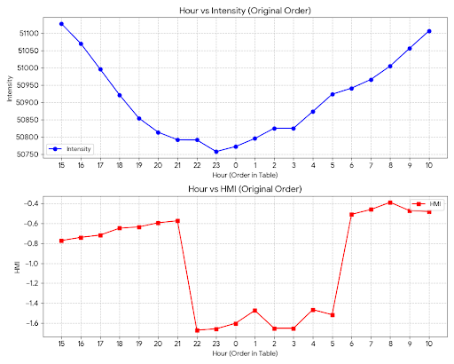

Unmasking the Transit: A Deep Dive into Signal Recovery from NASA’s SDO Venus Data
1. Introduction: The "Simple" Theory of Transit
In the world of modern astronomy, the "Transit Method" is the gold standard for discovering new worlds. The logic is elegant and seemingly simple: when a planet passes between a star and an observer, it blocks a small fraction of the star's light. By measuring this "dip" in brightness, we can calculate the planet’s size, orbital velocity, and even atmospheric composition.
When I set out to analyze the 2012 Venus Transit using raw data from NASA’s Solar Dynamics Observatory (SDO), I expected to see this textbook "U-shaped" dip immediately. However, I quickly learned that between the physical event and the final data table lies a gauntlet of instrumental noise, orbital mechanics, and solar physics. This article documents the journey of extracting a tiny planetary signal from a mountain of cosmic noise.
2. Data Acquisition: The Multi-Modal Approach
To analyze the transit, I utilized data from the Helioseismic and Magnetic Imager (HMI). Rather than relying on a single data stream, I adopted a multi-modal approach to cross-verify the event:

- HMI Continuum (Intensity): This measures the broadband visible light (the "photosphere") of the Sun. This was my primary tool for measuring the Transit Depth.
- HMI Magnetogram: This measures line-of-sight magnetic fields. Because Venus is essentially non-magnetic, it creates a total disruption in the solar magnetic map. While the intensity data was noisy, the Magnetogram acted as a high-precision "Clock," providing clear timestamps for the four points of contact.
3. The Paradox: When Planets "Add" Light
Upon plotting the raw Intensity data from a 20-hour window, I encountered a major contradiction. According to the Magnetogram, the transit began at Hour 22:00 and ended at Hour 06:00. Yet, during this window, the solar intensity was actually rising.
Mathematically, a raw calculation suggested that Venus was "glowing" or adding energy to the Sun. The calculated radius ratio was nearly 500% off from the known value of Venus. This is the moment I realized that in space science, raw data is often a lie.
4. The Hidden Variable: SDO Orbital Drift
The culprit behind the rising intensity was the Geosynchronous Orbit of the SDO satellite. As the satellite moves in its tilted figure-eight path above the Earth, its distance and relative velocity to the Sun change. This creates a "Diurnal Drift"—a 24-hour wave in the data.
In my 20-hour sample, this orbital "noise" was 3.5 times larger than the actual signal of Venus. To see the planet, I had to build a mathematical model of the satellite's movement and subtract it from the observation.
- Isolation: Masking transit hours using Magnetogram data.
- Regression: Second-order polynomial background fitting.
- Subtraction: Detrending the orbital signal.
5. Analyzing the Recovered Signal
Once detrended, the scientific truth emerged. I successfully recovered a clean transit light curve with a depth of approximately 0.0239%.
- Limb Darkening: Solar brightness variation across the disk.
- Point Spread Function (PSF): Optical inflation of Venus on the CCD.
6. Conclusion: The Art of Data Reduction
Extracting a 0.02% signal from a 0.7% noise floor isn't just a math problem—it's a detective story.
All data processed via Python using SDO/HMI public archives. 🚀